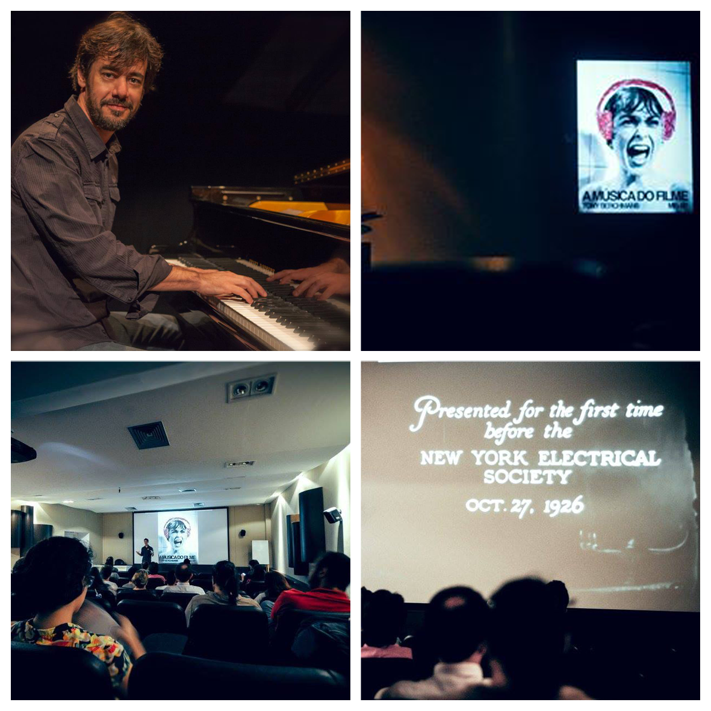

SAMBA - Semana de Produção Multimídia
☰TONY BERCHMANS

TEMA
"A MÚSICA DO FILME"
Das Origens aos Novos Olhares sobre a Música de Cinema. Vai apresentar um amplo panorama do universo da música de cinema, em diversos aspectos: As origens e a evolução histórica da composição musical no cinema, a importância da música na narrativa cinematográfica, os compositores e o processo de criação e produção musical, conceitos, fundamentos, funções e gêneros das trilhas sonoras musicais, e finalmente os novos olhares e tendências da composição da música do cinema contemporâneo.
Tony Berchmans Canto É autor do livro "A Música do Filme – Tudo o que você gostaria de saber sobre a música de cinema", referência bibliográfica sobre o tema. Pianista, compositor, produtor musical, engenheiro pós-graduado em Comunicação pela ESPM-SP, desde 1992 trabalha no mercado de produção fonográfica, coordenando, compondo e produzindo som para rádio, tv, cinema e internet. Em 2007 foi curador do "Música em Cena – 1o Encontro Internacional de Música de Cinema", evento inédito no Brasil, que trouxe personalidades importantes da música de cinema como Ennio Morricone e Gustavo Santaolalla, entre outros. Participa de festivais e concertos sobre o tema nos EUA, Espanha, Noruega, Bélgica e Brasil, criou o "Cena Sonora" programa da rádio Faap que explora as trilhas de cinema. Professor do curso de pós-graduação de trilha sonora da Universidade Anhembi-Morumbi, profere palestras e ministra cursos sobre produção de som em instituições como MIS/SP, PUC/SP, ESPM, FAAP, e SESC, e escreve sobre trilhas sonoras e sound design para sites e revistas. Em 2010 criou o projeto CINEPIANO Tony Berchmans, em que compõe trilha sonora ao vivo para clássicos filmes mudos ao piano solo, e vem se apresentando em inúmeras instituições como MIS/SP, SESC, SESI, entre outras. Desde 2013 vem se apresentando em diversos eventos especiais na europa, como o NattJazz Festival (Noruega) o Transilvania International Film Festival, (maior festival de cinema da Romênia), o Wide Skies Film Festival (Hexham, Inglaterra) e o Museu do Cinema (Londres)